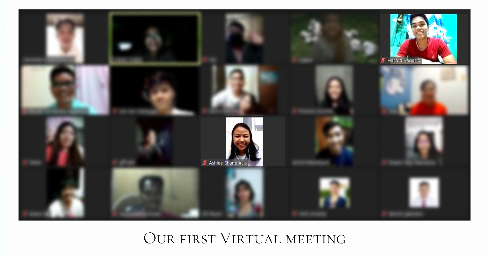

WE ARE GETTING MARRIED
Harold & Ashlee
SAVE THE DATE
OCTOBER 1ST, 2022 -
PHILIPPINES MANILA TEMPLE


Our Story
If it were possible for me to speak one-on-one with every young adult, I would plead with you to seek a companion with whom you can be sealed in the temple. You may wonder what difference this will make in your life. I promise it will make all the difference! As you marry in the temple and return repeatedly, you will be strengthened and guided in your decisions.
President Russell M. Nelson
Ashlee Shane Asis
Harold and I didn't fall in love. We grew in love as we take one step at a time.
When I was doing my "My Plan" on my mission, I didn't really know what to put under "Dating, Courtship, and Marriage". I was so scared of so many "what if's", especially the question: what if I choose the wrong person? So I scrolled through each slide seeking for an answer on how I will plan on it. Then this message made me pause:
"You have to trust the Lord that He will put people in your life who are supposed to be in your life."
At that moment, I knew Heavenly Father knew the desires of my heart. He knows what I want for my future and He knows that I will settle for nothing less than a temple marriage and a gospel-centered family. I know Heavenly Father knows what is best for me and has already laid down a plan for me to get there.
I later came home after my mission and was called as a Sunday school teacher for our branch. Just like everyone, once in a while, I feel inadequate to effectively teach people. One day, as I was conversing with a friend online about the gospel, he shared with me about a Come Follow Me gathering with some Sunday School teachers attending. I was sparked with excitement to attend and learn some teaching skills and different approaches that I can apply in my teaching. Turned out, the discussion was about one of my favorite D&C Sections. I participated in the discussion and shared some insights. It was a great gathering and I'm happy to bring home additional learnings and skills. Only to know, hindi lang pala ideas and skills makukuha ko sa gathering.
Harold messaged me and dun na nagsimula ang friendship namin. It was quite interesting as how he conversed with me reflected he has a great path he wants to pursue in life. At that time, I had always longed to go to the temple so we planned to meet there in person. It was impossible at that time because my parents won't allow me to go to the temple without a companion. It was a time of tight restrictions on traveling due to the pandemic. But after much prayer, miracles came! My father was invited to a temple marriage by one of our district members and I got to come along! This became the way for Harold and I to finally meet.
Our first meeting was very quick yet meaningful. I told Harold while holding him "Totoo ka pala no?". I continue to say this to him whenever I'm struck in awe of how amazing Heavenly Father's plan is.
Looking back, I still can't believe Heavenly Father crossed our path ni Harold. He is an amazing and faithful priesthood holder. I can say that he is the type of someone I'm "looking for" but found during a time I wasn't looking. Surely, heaven has a greater plan. I can now see Heavenly Father's personal promise to trust Him and fear not. I am also forever grateful that Harold and I choose to love each other. I am grateful that we choose to see each other from an eternal perspective.
How did we move forward from that point to now? The answer is simple, we "lay hold upon the word" of God and trust in His promises. We saw God's hands leading us through it all. Whenever we plan something "impossible" for us, God provided a way for it to be accomplished. We trusted God in every step of our dating and courtship and will continue to do so in our marriage and for all eternity.


Manuel Harold Sagario
After returning home from my mission, I had a clear vision of what I wanted to accomplish in the next 5 years, with the most significant goal being to get married in the Temple.
One evening, I was listening to one of President Nelson's talks about temples. This was a time when I was eager to delve deeper into the temple's significance. Each time my older brother, or 'kuya,' invited me to attend the temple, I felt the need to increase my understanding and testimony of it. While listening, I came across one of his invitations to every young adult member of the church, which was to 'seek an eternal companion.' Initially, I regarded it as a standard invitation for returned missionaries, but it wasn't until he continued with his promised blessing, saying,
"You may wonder what difference this will make in your life. I promise it will make all the difference!"
After hearing President Nelson's words, they lingered in my mind. The following Sunday, during our online Come, Follow Me gathering, I had a strong impression to attend. While listening to the insights being shared, I heard a beautiful insight from a remarkable woman. As she spoke, I was impressed to message her right away, as I became interested in getting to know her. Without hesitation, I added her on Facebook and sent her a message. After she accepted my friend request, I greeted her and inquired about our gathering. She replied that it was great and fun. I then expressed my interest in getting to know her. Little did we know that that day would mark the beginning of our incredible journey.
After months of dating and courtship, I asked her to be my girlfriend, and just a few months ago, I made a firm decision to propose and asked her to be my eternal companion. Our journey has not been without challenges, as Ashlee and I are a hundred miles apart, each with our personal goals to pursue. Nonetheless, we continue to cherish and support each other, never considering giving up.
Today, our relationship remains a testament to a prophet's invitation. Since the day I met her, I've come to better understand President Nelson's prophetic blessing. I've witnessed the difference it has made in my life from the day I acted upon his invitation. My brother got married, my family was sealed, my younger brother received his mission call, and I developed an increased testimony of the temple. Most importantly, I met my eternal companion in Ashlee. We are excited to witness more 'differences' that will occur in our lives, knowing that it won't stop on the day I saw her or the day I marry her, but it will continue throughout all eternity.

Our Testimony
We are so much grateful for this opportunity to be married for all time and for all eternity in the House of the Lord. We testify that as we keep the commandments of God, "He shall prepare a way for [us] that [we] may accomplish the things which he commandeth [us]." As Ashlee and I strived to recognize those ways, we were able to receive confirmation that what we are doing is in favor of the Lord. We are excited to seek greater understanding of the difference President Nelson is pertaining to and to see them unfold in our journey.
We would also like to send an invitation to understand President Nelson's counsel and witness the difference it will make in your life! Take courage and be faithful. The heavens are open to those who are continually seeking with real intent. This journey will be one of your joyous pursuits in life.
Seek an eternal companion and it will make all the difference.
President Russell M. Nelson
10.24.21

Thank you for taking time to read our story.
If you are thinking of giving gift to help us on our way, a monetary gift would really make our day!
Here are our details:
GCash

BDO

Union Bank

Your generosity will help make our special day even more special and truly memorable.
From the bottom of our hearts, thank you for your love and support!
Much love,
Harold & Ashlee
10.01.22